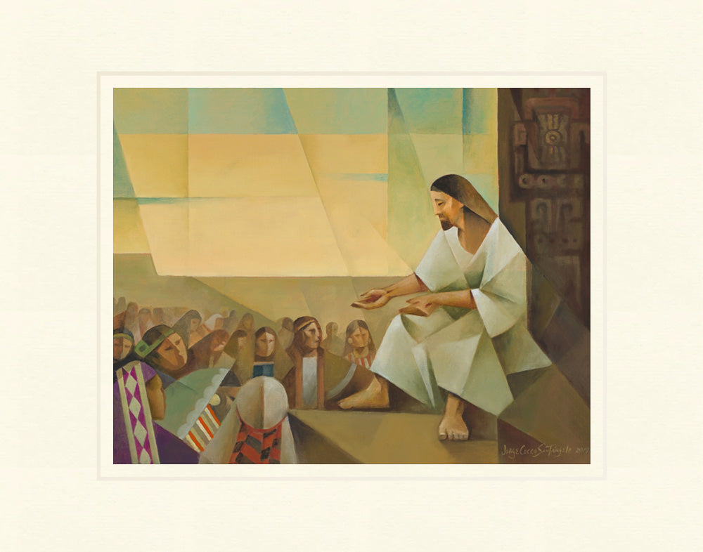

Duminică - Intrarea în Ierusalim
Matei 21:9: "Binecuvântat este Cel ce vine în Numele Domnului!"
- Isus intră în Ierusalim (Matei 21:1-11; Marcu 11:1-10; Luca 19:29-44; Ioan 12:12-19)
- Isus Își prezice moartea (Ioan 12:20-36)
- Isus vizitează templul (Matei 21:14-17; Marcu 11:11)
Luni

Matei 21:13: "Casa Mea se va chema o casă de rugăciune, dar voi ați făcut-o o peșteră de tâlhari."
- Isus blestemă smochinul (Matei 21:18-19; Marcu 11:12-14)
- Isus curăță templul (Matei 21:12-13; Marcu 11:15-18; Luca 19:45-48)
Marți

Matei 24:35: "Cerul și pământul vor trece, dar cuvintele Mele nu vor trece."
- Lecția oferită de blestemarea smochinului (Matei 21:20-22; Marcu 11:20-26)
- Isus dă învățătură și se angajează în diverse discuții la templu (Matei 21:23-23:29; Marcu 11:27-12:44; Luca 20:1-21:4)
- Isus prezice viitorul (Matei 24-25; Marcu 13:1-37; Luca 21:5-36)
Miercuri
Luca 21:38: "Și toată mulțimea venea dis-de-dimineață la El în Templu, ca să-L asculte."
- Isus continuă să dea învățătură în templu (Luca 21:37-38)
- Sanhedrinul complotează să Îl omoare pe Isus (Matei 26:3-5; Marcu 14:1-2; Luca 22:1-2)
Joi

Luca 22:19: "Acesta este trupul Meu, care se dă pentru voi; să faceți lucrul acesta spre pomenirea Mea."
- Isus îi trimite pe ucenici să pregătească masa de Paște (Matei 26:17-19; Marcu 14:12-16; Luca 22:7-13)
- Cina cea de Taină și instituirea Mesei Domnului (Matei 26:20-29; Marcu 14:17-23; Luca 22:14-30)
- Isus spală picioarele ucenicilor (Ioan 13:1-17)
- Rugăciunea din Ghetsimani (Matei 26:36-46; Marcu 14:32-42; Luca 22:40-46)
Vineri
Luca 23:34: "Tată, iartă-i, căci nu știu ce fac!"
- Isus este trădat de Iuda și arestat (Matei 26:47-56; Marcu 14:43-52; Luca 22:47-53; Ioan 18:2-12)
- Procesul lui Isus (Matei 26:57-68; Marcu 14:53-65; Luca 22:63-71)
- Răstignirea și moartea lui Isus (Matei 27:35-56; Marcu 15:24-41; Luca 23:33-49; Ioan 19:18-37)
Sâmbătă
Matei 27:63: "Aduceți-vă aminte că în timpul vieții Lui, acel înșelător a spus: 'După trei zile voi învia.'"
- Preoții și fariseii plasează o gardă la mormânt (Matei 27:62-66)
Duminică - Învierea

Matei 28:6: "El nu este aici; a înviat, după cum a spus. Veniți de vedeți locul unde zăcea Domnul."
- Femeile descoperă mormântul gol (Matei 28:1-7; Marcu 16:1-7; Luca 24:1-7; Ioan 20:1)
- Maria Magdalena se întâlnește cu Isus (Ioan 20:11-18)